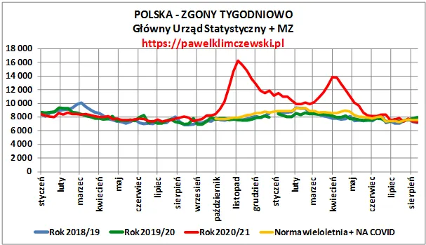
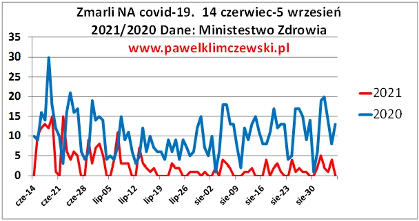

Czwarta fala? Panowie ministrowie, nie było pierwszej a wy zdrowych ludzi do psychiatryka chcecie wysyłać? Sami tam się “ustabilizujcie”!
Dane o śmiertelności w Polsce.
Ukazały się dane o śmiertelności w Polsce do połowy sierpnia 2021 i warto się nad nimi pochylić, bo w letnich tygodniach śmiertelność spadła poniżej średniej z lat poprzednich. Bez danych o strukturze wieku, a te nie są podawane na bieżąco, trudno o głębsze analizy, ale z wykresu widać, że przedwczesna śmierć ponad 133 tysięcy osób w ostatnim sezonie musiała zaważyć na statystykach w miesiącach następnych. Lapidarnie możemy ten koszmarny proces podsumować zdaniem, że przyspieszając śmierć wielu ludzi w miesiącach poprzednich teraz będziemy mieć "lepsze wyniki", bo po ludzku nie ma komu umierać...

Przypominam, że przed reorganizacją służby zdrowia w 2020 w Polsce normą było 1250 zgonów na dobę do czego obecnie wracamy. Latem też zawsze notowano zgony na choroby układu oddechowego, ale w mniejszym nasileniu i jest to w Polsce około 200 zgonów dobowych na różne schorzenia układu oddechowego. Na covid-19 w ostatnich miesiącach mieliśmy kilka a nawet jeden zgon dobowo, patrz wykres 2. Nie wchodzę w ogóle w dyskusję o szczepieniach nieprzetestowanym preparatem, bo jest to dyskusja idiotyczna w obliczu ww. faktów, tj. danych rządowych.
Wirus czy zamordyzm?
Zgony na choroby układu oddechowego mogą występować po długim okresie braku aktywności na świeżym powietrzu, noszenia brudnej maseczki przez długi okres wiele godzin dziennie, braku odporności po długiej izolacji, długotrwałemu stresowi, itp. itd. W skali masowej za czynnik podwyższonej śmiertelności należy też uznać umieszczanie osób starszych z typowymi infekcjami dróg oddechowych w szpitalach zakaźnych, co robiono od wiosny 2020 we Włoszech, Hiszpanii i wielu innych krajach, a od jesieni 2020 także w Polsce. Jak widać z danych i podejmowanych działań rządu mamy wiele przyczyn podwyższonej śmiertelności w sezonie grypowym 2020/2021. Udział covid -19 oficjalnie to tylko 1/8 wzrostu śmiertelności. Jednak w obliczu potężnej ilości relacji o przypisywaniu covid-19 jako przyczyny śmierci osobom poważnie chorym na zupełnie inne choroby możemy te dane podzielić wielokrotnie.
Oficjalny poziom zgonów na covid-19 latem 2021 jest wielokrotnie niższy niż rok temu, gdy był też marginesem jako przyczyna śmierci. Naciskanie w tej sytuacji, aby szczepić dzieci, które nie chorują lub przechodzą lekko tę infekcję jest pozornie idiotyczne i wskazuje na niemedyczny aspekt całego przedsięwzięcia.

Jak ktoś rok temu słusznie zauważył covid-19 jest to test na inteligencję, a dokładnie na poziom możliwego przymusu, na jakie sobie władza może pozwolić. W Sejmie czeka na głosowanie ustawa 1449, która daje władzy już pełną swobodę w kierowaniu opornych ludzi do wariatkowa i wprowadza przepisy, zupełnie analogiczne do sowieckiej praktyki w najgorszym stalinowskim okresie. https://legaartis.pl/blog/2021/08/21/druk-1449-najnowsze-informacje/
Dlatego w środę, 15 września 2021 o 16:00, bez względu na sympatie polityczne, musimy pod sejmem pokazać co o tym myślimy. Wiatr historii wieje mocno, wszystkie ręce na pokład !
Paweł Klimczewski